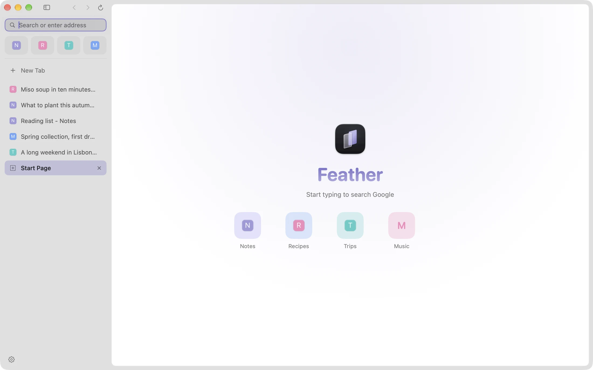
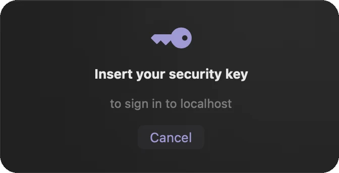

It keeps your tabs
Quit, crash, force quit: your tabs, pins and history are saved within a fraction of a second, written safely, and backed up. They are there when you come back.
Early alpha · free and open source
Feather is a native macOS browser built on WebKit. Sidebar tabs, quiet animation, and one promise it works hard to keep: it doesn’t lose your tabs.

Quit, crash, force quit: your tabs, pins and history are saved within a fraction of a second, written safely, and backed up. They are there when you come back.
Tabs you haven’t looked at in a while are unloaded and reload when you return, never while playing media, using the camera, or holding text you haven’t sent. No benchmarks yet, so no claims.
Swift and SwiftUI on Apple’s own WebKit. No accounts, no analytics, no telemetry, no third-party code. It runs inside the macOS App Sandbox.
A focused set of features, done carefully.
Tabs live in a sidebar. Pinned tabs sit in an icon grid at the top: drag a tab onto it to pin, drag to reorder, drag back to unpin.
URLs and searches in one place. It takes focus on every new tab, and a click selects the whole address so you can just type.
Rolling backups, quarantine for damaged files, and History > Restore Previous Session to undo a mistaken mass-close.
Sign in and register with a YubiKey or other FIDO2 key, PIN included. Apple doesn’t offer this to third-party browsers, so Feather speaks to the key itself.
Feather finds new versions, verifies the owner’s signature, and installs with one click, then reopens with your tabs. Nothing happens without your click.
Animations that respond to what you do, in light and dark. They switch off with macOS Reduce Motion.
Bookmarks, local-only history, downloads, find in page, per-site zoom, printing, file upload, and camera, microphone and location prompts.
Make Feather your default browser and links from other apps open in it. It opens local HTML files too.
The one thing it is serious about
Browsers crash, Macs restart, batteries die. Feather is built around the idea that what you had open should still be there afterwards.

Sign-in
WebKit doesn’t offer security keys to third-party browsers without an Apple entitlement. Feather talks to USB FIDO2 keys directly instead, and always shows which site is asking.
Tested with a real YubiKey (firmware 5.7.4), results verified by Yubico’s python-fido2. iCloud passkeys, Touch ID, and NFC or Bluetooth keys are not supported; they need an Apple program Feather isn’t part of.
Feather is made by one person and tested on one Mac. Here is where it stands.
Latest release
Free · MIT license · macOS 14 or later · Apple silicon only
SHA-256
Feather is signed ad hoc and not notarized, because notarization needs a paid Apple Developer account. macOS will say it can’t verify the app, and asks you once to allow it.
Choose Feather > Check for Updates…. From version 0.1.3, Feather updates itself with one click.
You need Xcode and XcodeGen.
git clone https://github.com/lumenworksco/-Feather.git Feather
cd Feather
xcodegen generate
xcodebuild -project Feather.xcodeproj \
-scheme Feather -configuration Release \
-derivedDataPath build buildYes. It is open source under the MIT license, with no accounts, ads or paid tier.
macOS shows that warning because Apple hasn’t reviewed the app, not because anything was found wrong with it. The honest answer is that you are trusting an individual developer. You can check the SHA-256 shown above, read every line of the source, or build Feather yourself with the steps above. Updates are signed with a key only the developer holds.
No. Feather uses WebKit, the same engine as Safari, through Apple’s own WKWebView. The browser around it is written in Swift and SwiftUI.
The pages you open. It also downloads the small icon of each site you visit, to show it in your tabs, and asks GitHub for the newest release about once a day (you can switch that off in Settings). The address bar searches Google. There are no analytics, accounts or telemetry. Tabs, history and bookmarks stay on your Mac.
Not yet. A password manager, ad and tracker blocking, private browsing and extensions are all on the list, in no promised order.
It is built and tested on a single Apple silicon Mac, and Feather doesn’t offer an Intel build yet. It is meant to run on macOS 14 or later but hasn’t been tried on other versions.
It is designed to be easy on memory, with unloading of tabs you aren’t using, but nobody has measured it against other browsers yet. Until that is done, Feather makes no claim.
Each release carries a manifest signed with a private key kept only by the developer. Feather has the matching public key built in and ignores anything that doesn’t verify, so a compromised download page alone can’t push an update. A small helper installs it after checking everything again, and rolls back if the new version doesn’t start. See the README for the details.
Bugs are welcome as issues on GitHub. For security problems, please use GitHub’s private Report a vulnerability option on the repository’s Security tab instead of a public issue.